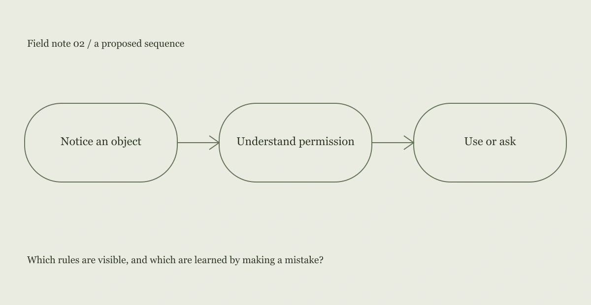

Which rules are visible, and which are learned by making a mistake?
The scene
In the fictional setting, people share a large table, power outlets and a shelf of materials. Some objects are free to use and others belong to someone. The room is friendly, but ownership is not obvious. A newcomer has to ask several small questions before feeling able to begin.
An interpretation
The friction comes from uncertain permission. A label that says “shared” does more than identify an object; it gives someone confidence to use it. The design challenge is to make that permission legible without creating a bureaucratic system for a small social space.

A design proposal
The proposal uses three ordinary labels: shared, please ask, and in use. The labels attach to places rather than to people. A small welcome note explains the pattern and gives a human contact for exceptions. The system remains deliberately incomplete because conversation is still part of the space.
What this does not establish
This is a fictional inquiry with no fieldwork or measured outcome. The labels are a design hypothesis. They could fail if the room’s actual practices differ from the categories, or if people interpret “please ask” as a barrier rather than an invitation.
The next question
The next study would examine whether newcomers and regular visitors interpret the labels similarly. I would pay particular attention to objects that move between shared and personal use during the day.